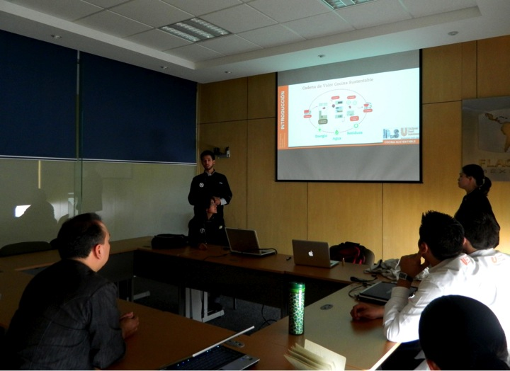

Cocina Sustentable
El 50% de los alimentos producidos a nivel mundial son desperdiciados o desechados
En base a la investigación y publicación de la UNEP y la National Restaurant Association US donde se destaca que el 50% de los alimentos producidos a nivel mundial son desperdiciados o desechados como resultado de la ineficiencia en una cadena de alimentos controlada, como es el caso de restaurantes y minoristas. De este porcentaje de desperdicios, el 65% es generado durante la misma preparación y aproximadamente 30% proviene de los comensales. UFS elabora el reporte Mundial del Menú donde se aprecia el creciente interés de comensales y profesionales de la cocina por conocer la procedencia y destino final de los alimentos. A raíz de este reporte, UFS inicia el proyecto cocina sustentable el cual tiene como finalidad principal reducir el desperdicio concientizando al personal de cocina de sus clientes basándose en la cadena de valor. Con el propósito de complementar el proyecto ya existente, nosotros, estudiantes de Ingeniería en Desarrollo Sustentable y miembros de la asociación estudiantil IDeaS, colaboramos con UFS implementando en dichas cocinas nuevos métodos de evaluación enfocados en eficiencia energética, hídrica, reducción de residuos y conciencia ambiental. Una vez hecha la evaluación, nos concentramos en crear propuestas adecuadas para la cocina evaluada. Este proyecto tiene entonces la finalidad de encaminar a las cocinas hacia practicas más sustentables. Esto quiere decir que mediante la responsabilidad ambiental y social se puede alcanzar un crecimiento económico mediante el ahorro, lo cual otorga a las cocinas un valor agregado en sus servicios.
